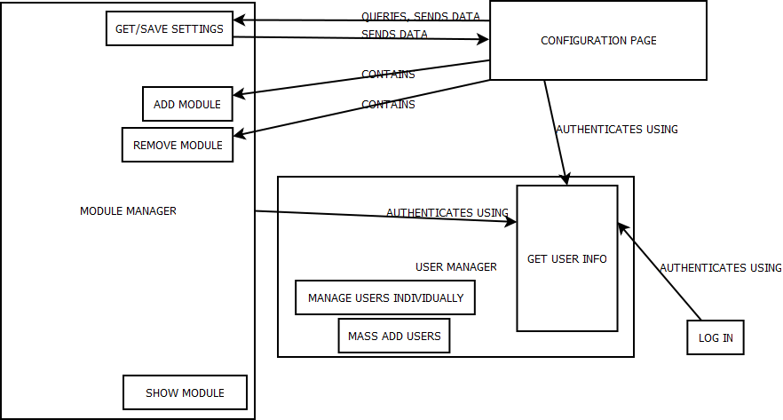
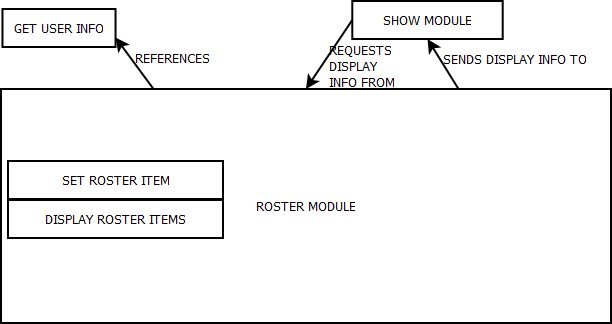

The Module Manager is responsible for displaying pages, and will be stored on the server as index.php (and is the default webpage).
ADD MODULE: Adds a module to the filesystem and adds its entry to the database. Note: Modules are given a unique name upon addition to allow for multiple subgroups.
REMOVE MODULE: Removes a module from the filesystem and removes its database entry.
SHOW MODULE: Outputs the requested module.
GET/SAVE SETTINGS: In conjunction with the configuration page, saves module-specific settings to that module's settings table.
AUTHENTICATES: via the User Manager.
QUERIES and SENDS DATA to and from the module manager
CONTAINS the actual interface controls to add and remove modules.
AUTHENTICATES via the User Manager.
MANAGE USERS INDIVIDUALLY to edit a user's privelege one-by-one.
MASS ADD (or remove) USERS to add or remove a whole class list.
GET USER INFO to return that user's name, check password against stored hash, return user's database ID, etc.
LOG IN: Authenticates via the user manager.

PURPOSE: The User Auth table only holds data for authentication, and the roster may contain other fields such as dues paid, user information, profiles, and so on. This way, a particular subgroup can have its own roster separate from the master list.
SET ROSTER ITEM: Adds a user to the roster.
DISPLAY ROSTER ITEMS: Displays a select number of roster items (as chosen on config page).
Show Module (from the Module Manager) REQUESTS INFO FROM this module, which in turn, returns DISPLAY INFO.
This module REFERENCES the User Manager's Get User Info object.
PURPOSE: Some groups wanted the option for a forum.
INTERNAL USER LIST: contains information regarding which users are moderators (and contains no info if a user is not a moderator).
ADD POST/TOPIC: Adds a post, topic, thread, etc.
REMOVE POST/TOPIC: Removes a post, topic, thread, etc. Mods can remove other users' items and will automatically leave a "REMOVED BY MOD" note.
EDIT POST/TOPIC: Allows users or mods to
edit posts. Mods that edit others' posts will automatically leave an "EDITED BY MOD" note.
DISPLAY POSTS/TOPICS: Displays posts in a thread, lists of threads under a topic, or lists of topics.
Show Module (from the Module Manager) REQUESTS INFO FROM this module, which in turn, returns DISPLAY INFO.
This module REFERENCES the User Manager's Get User Info object.
Brett's Class Diagrams